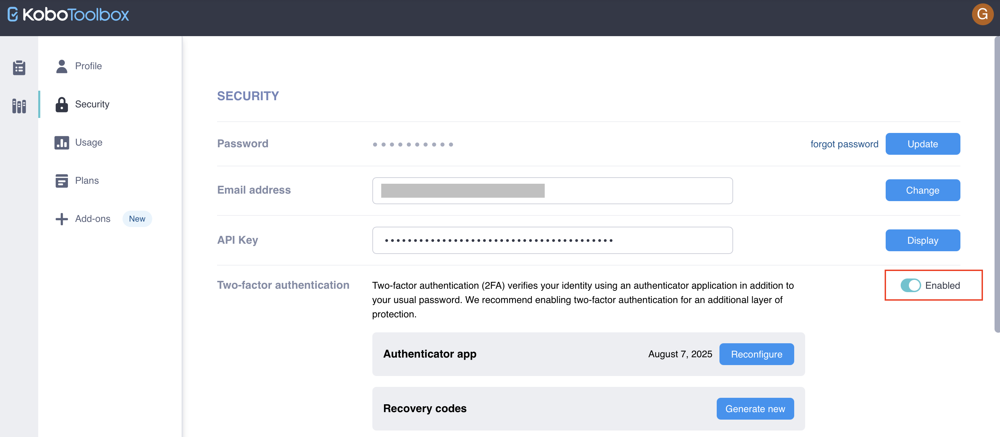

Busca en nuestra documentación, explora nuestros recursos y visita nuestro Foro de la Comunidad para obtener información más detallada
Última actualización: 23 Apr 2026
KoboToolbox admite la autenticación de dos factores (2FA) para mejorar la seguridad de tu cuenta. Con la 2FA, necesitarás ingresar la contraseña de tu cuenta y un código generado por una aplicación en tu smartphone para acceder a tu cuenta de KoboToolbox.
La 2FA minimiza los riesgos asociados a una contraseña comprometida. Incluso si tu contraseña es hackeada, obtenida mediante phishing o adivinada, la 2FA impide el acceso no autorizado a tu cuenta al agregar una capa adicional de seguridad más allá de la autenticación de un solo factor (SFA).
Nota: Para configurar la 2FA en tu cuenta de KoboToolbox, necesitas una aplicación de autenticación compatible en tu dispositivo móvil. Este artículo utiliza Google Authenticator, disponible en Google Play Store y Apple App Store, aunque también funcionan otras aplicaciones de autenticación.
Este artículo cubre los siguientes temas:
Configurar la 2FA con un código QR o una clave manual
Deshabilitar y reconfigurar la 2FA
Usar KoboCollect cuando la 2FA está habilitada
La 2FA en KoboToolbox se puede configurar mediante dos enfoques: el enfoque de código QR y el enfoque de clave manual. Para comenzar con cualquiera de los dos:
Inicia sesión en tu cuenta de KoboToolbox.
Haz clic en el ícono de tu perfil en la esquina superior derecha.
Selecciona CONFIGURACIÓN DE LA CUENTA.
Ve a la ventana Seguridad.
En la sección Autenticación de dos factores, habilita la 2FA activando el botón Desactivado.
Abre tu aplicación de autenticación y sigue los pasos para uno de los dos enfoques que se describen a continuación.
El primer método es el enfoque de código QR, que utiliza la cámara de tu dispositivo para escanear un código QR y configurar la 2FA en tu cuenta.
Nota: Los pasos a continuación describen el proceso usando la aplicación Google Authenticator. El proceso debería ser similar con otras aplicaciones de autenticación, aunque puede haber algunas diferencias.
Para configurar la 2FA con un código QR:
Abre tu aplicación de autenticación y haz clic en Comenzar.
Selecciona Escanear un código QR. La cámara de tu dispositivo debería activarse.
Escanea el código QR visible en tu monitor.
Ingresa el PIN de 6 dígitos de la aplicación de autenticación en tu cuenta de KoboToolbox para configurar la 2FA y, a continuación, haz clic en Siguiente.
Se mostrarán códigos de recuperación para ayudarte a acceder a tu cuenta si tu aplicación de autenticación falla. Descarga los códigos seleccionando Descarga los códigos y guárdalos en un lugar seguro.
Continúa seleccionando Guardar mis códigos.
Has configurado correctamente la 2FA en tu cuenta de KoboToolbox mediante el enfoque de código QR.
El segundo enfoque es el enfoque de clave manual, que no requiere la cámara de tu dispositivo para configurar la 2FA en tu cuenta de KoboToolbox.
Para configurar la 2FA con una clave manual:
En la parte inferior de la ventana de 2FA en KoboToolbox, haz clic en ¿No tienes un código QR? Ingresa la clave manualmente. Se mostrará una clave de 32 caracteres.
Abre tu aplicación de autenticación y haz clic en Comenzar.
Selecciona Ingresar una clave de configuración.
Ingresa el nombre de la cuenta (por ejemplo, «KoboToolbox») y la clave de 32 caracteres en la aplicación y, a continuación, haz clic en Agregar.
Ingresa el PIN de 6 dígitos de tu aplicación de autenticación en tu cuenta de KoboToolbox para configurar la 2FA y, a continuación, haz clic en Siguiente.
Se mostrarán códigos de recuperación para ayudarte a acceder a tu cuenta si tu aplicación de autenticación falla. Descarga los códigos seleccionando Descarga los códigos y guárdalos en un lugar seguro.
Continúa seleccionando Guardar mis códigos.
Has configurado correctamente la 2FA en tu cuenta de KoboToolbox mediante el enfoque de clave manual.
Para deshabilitar la 2FA en tu cuenta de KoboToolbox:
Haz clic en el ícono de tu perfil en la esquina superior derecha.
Selecciona CONFIGURACIÓN DE LA CUENTA.
Ve a la ventana Seguridad.
En la sección Autenticación de dos factores, deshabilita la 2FA desactivando el botón Activado.
Abre la aplicación de autenticación en tu smartphone, obtén el código de 6 dígitos e ingrésalo. Haz clic en Siguiente.
Después de ingresar el código de 6 dígitos, el sistema deshabilitará la 2FA en tu cuenta.

Para reconfigurar la 2FA en tu cuenta de KoboToolbox (por ejemplo, para configurar un nuevo smartphone):
Haz clic en el ícono de tu perfil en la esquina superior derecha.
Selecciona CONFIGURACIÓN DE LA CUENTA.
Ve a la ventana Seguridad.
En la sección Autenticación de dos factores, junto a Aplicación de autenticación, haz clic en el botón Volver a configurar para comenzar a reconfigurar la 2FA. Este proceso sigue los mismos pasos que la configuración inicial de la 2FA.
Cuando reconfiguras la 2FA en tu cuenta, la configuración anterior se elimina automáticamente. Los tokens o códigos de recuperación de la configuración anterior dejarán de ser válidos. Una vez desactivada tu 2FA actual, se te pedirá que la configures nuevamente. Si no puedes completar el proceso, la 2FA quedará deshabilitada en tu cuenta. En ese caso, puedes habilitarla nuevamente en cualquier momento siguiendo el proceso habitual descrito anteriormente.
La autenticación de dos factores agrega una capa de protección a las cuentas con datos sensibles. El uso de estas cuentas para la recolección de datos puede representar riesgos significativos. Por ello, al activar la 2FA en tu cuenta, ya no podrás descargar formularios ni enviar datos a KoboCollect desde esta cuenta. Recibirás un mensaje de error al intentar descargar nuevos formularios dentro de la aplicación, como «Server Requires Authentication: Invalid username or password for server.»
Para recolectar datos con KoboCollect cuando la 2FA está activa, recomendamos cualquiera de los siguientes enfoques:
Crea una cuenta de KoboToolbox separada para la recolección de datos y las pruebas de formularios, y úsala con KoboCollect. Comparte tus formularios con esta nueva cuenta y restringe sus permisos a Añadir envíos para mayor seguridad.
Habilita «Permitir envíos a este formulario sin nombre de usuario ni contraseña» para tus formularios y conéctate a KoboCollect usando las siguientes credenciales:
URL: https://[kobocollect_url]/[username]
Nombre de usuario: (en blanco)
Contraseña: (en blanco)
El segundo enfoque permite a los usuarios descargar y enviar datos a cualquier formulario compartido con username que no requiera autenticación.
¿Encontraste lo que buscabas? ¿La información fue clara? ¿Faltaba algo?
¡Comparte tus comentarios para ayudarnos a mejorar este artículo!
KoboToolbox es mantenido por Kobo Inc.